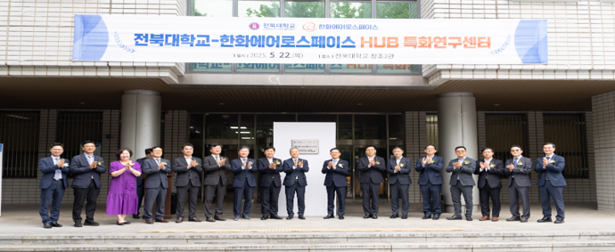
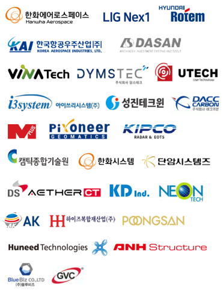
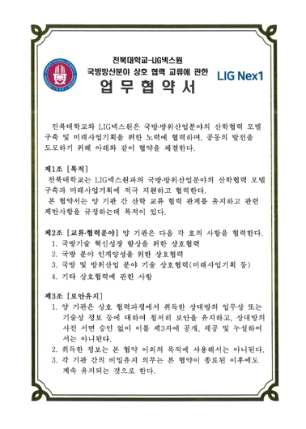
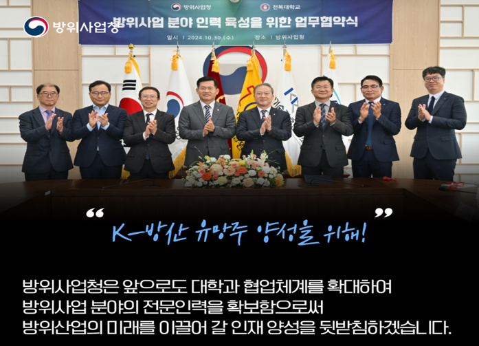
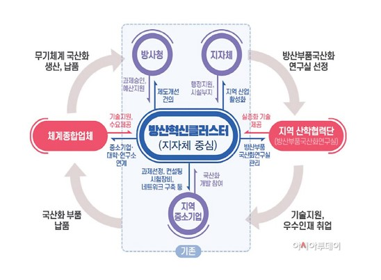
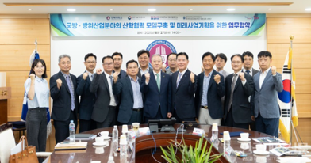

국방산업연구소
전북대학교 K-방위산업연구소는 국방 분야와 첨단 기술의 융합을 기반으로
미래 방위산업 발전에 기여하기 위한 교육·연구 거점입니다.
연구소는 국방산업의 수요에 대응하는 실무형 인재를 양성하고,
지역 및 산업체와의 협력을 통해 국방 기술 경쟁력 강화에 이바지하는 것을 목표로 합니다.
주요 협력 및 성과

업무협약 및 공동연구 참여 기업

업무협약서 내 교류협력분야

주요 방산기업 업무협약
방산 클러스터 및 정책

방산혁신클러스터 사업 유치전략 기획
